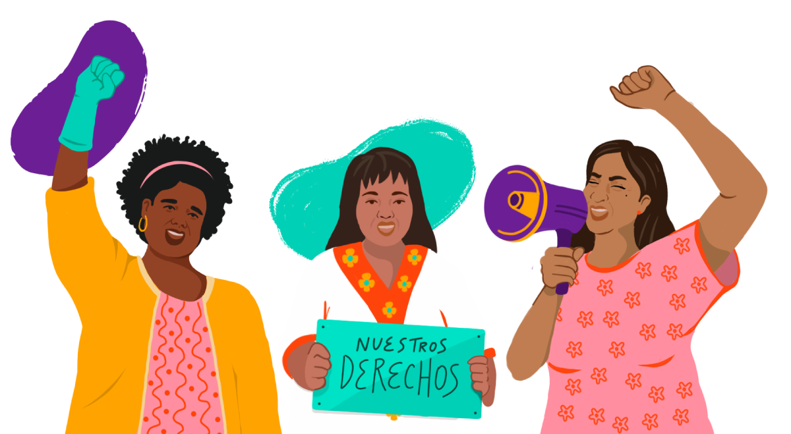

Información adicional
Herramientas estatales

México
La Secretaría del Trabajo y Previsión Social del Gobierno de México pone a disposición de las personas empleadoras y personas trabajadoras del hogar un Modelo de Contrato de Trabajo del Hogar que contiene los mínimos establecidos por la Ley Federal del Trabajo.
DescargarAfiliación a la seguridad social
Ir al formulario de afiliación
Guatemala
Apoya la ratificación del Convenio 189 en Guatemala, sigue las redes de CENTRACAP y súmate a su campaña
#UnidasPorUnTratoDigno
Cajas de herramientas para personas empleadoras y trabajadoras del hogar
Información para las personas empleadoras
Recibe asesorías gratuitas sobre cómo afiliar a la seguridad social a quien trabaja en tu hogar
WhatsApp(+52) 55 3193 7295
Encuentra más información de buenas prácticas para las personas empleadoras
Hogar Justo HogarConoce cuál es el salario para las personas trabajadoras del hogar
Tabulador Salarial -CACEHFomenta el trato digno y evita la violencia laboral y discriminación hacia quienes trabajan en tu hogar. Valora su labor y crea un ambiente laboral seguro y justo.
Violentómetro —CIMInformación para las personas trabajadoras del hogar
Recibe asesorías psicológicas y legales gratuitas
WhatsApp(+52) 55 3193 7295
Sigue nuestras redes sociales para encontrar capacitaciones y certificaciones gratuitas en cuidados de adulto mayor, preparación de alimentos y bebidas, cuidado de niños, etc. con validez curricular.
Cursos cortos
Seguridad y salud en el trabajo del hogar Género y violencia laboral en el trabajo del hogar Equilibrio Vida-familia-trabajo del hogarEncuentra más información sobre derechos para personas trabajadoras del hogar
Centro de Apoyo para las Trabajadoras de Casa Particular —CENTRACAP